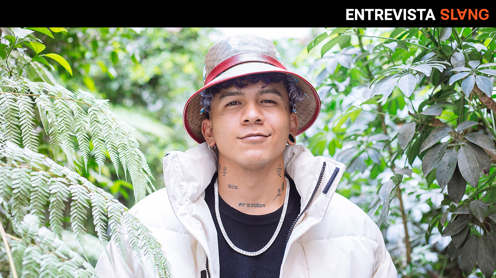
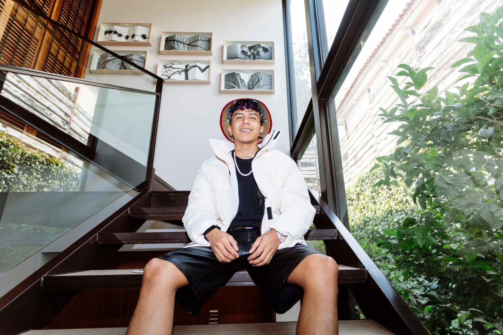
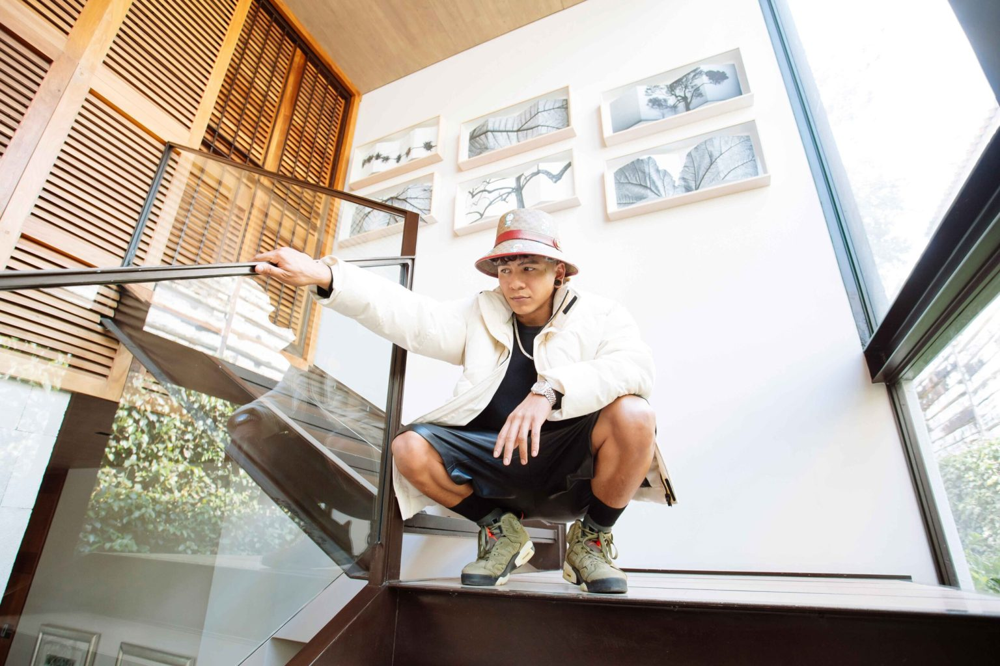
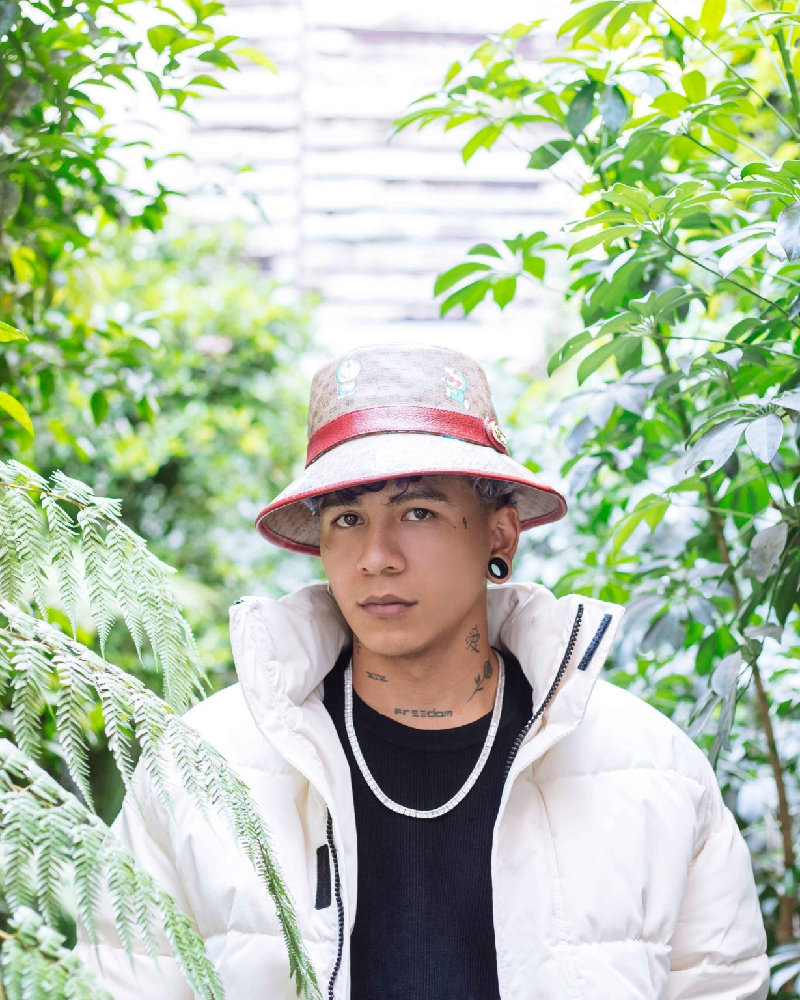

Platicamos con el rapero y cantante venezolano en la CDMX sobre su álbum debut en el que experimenta con reggaetón, R&B y trap.
Big Soto se ha caracterizado por ser uno de los artistas más versátiles en la actualidad y finalmente, luego de casi una década de trayectoria, el venezolano lanza su álbum debut en forma: The Good Trip, una búsqueda por una identidad musical multifacética.
Y la espera no ha sido en vano. En su primera semana de estreno, el material discográfico se ha posicionado como el séptimo más escuchado en Spotify Global, perfilándose como la muestra de que el “Chamito Loco” va en ascenso.
Luego de platicar vía Zoom hace unos meses sobre su carrera en la que pasó por el skating hasta los caminos vertiginosos del trap, visité a Big Soto en una casa ubicada en la zona norte de la CDMX, donde se preparaba para el lanzamiento del disco.
Ahí, con protocolos de salud necesarios para hacer una entrevista presencial en la pandemia, me senté con el rapero y cantante para platicar sobre el álbum con el que busca romper con sus propios estereotipos musicales.
Producido por algunos de los beatmakers y productores que están marcando la pauta en las listas de popularidad como Lara Project (Kali Uchis, Bad Bunny); Beatboy (Gera MX, Daddy Yankee); así como Súbelo Neo, The Good Trip es un álbum que integra reggaetón y trap —de la mata—, con un color R&B moderno que convive a la perfección con el tono melódico de Big Soto.
Para abrir la conversación, empecé con esta inclusión de sonidos en el disco: “Más allá de todo lo que he demostrado como artista al día de hoy, creo que siempre era necesario regalarle al público algo de lo que ellos no están acostumbrados a oír de mí. Muchos artistas se quedan siempre con la idea de ‘ah, yo soy alguien que hace reggaetón y tengo que seguir haciéndolo, porque si yo hago otra cosa, la gente no lo va a aceptar igual’”, responde Soto.
“Me doy cuenta que hice lo que varios quieren hacer, pero no lo hacen porque se encierran en una sola cosa. Yo soy parte de esa gente que se arriesga a hacer cosas nuevas. Experimentar e innovar, de eso es de lo que se trata”, destaca sobre la presencia del reggaetón, el R&B y más en su álbum debut, después de que durante todo este tiempo la gente lo ha clasificado como un artista de trap.
The Good Trip llega en un momento en el que se ha demostrado que las propuestas más interesantes se encuentran en aquellos que no le tienen miedo a romper las etiquetas de la industria. Véase el caso de Bad Bunny, el artista más escuchado de Spotify en 2020, quien pasó de hacer reggaetón y trap en YHLQMDLG a experimentar con el rock en EL ÚLTIMO TOUR DEL MUNDO.
De hecho, además de la variación de estilos, el Conejo Malo y Big Soto tienen una cosa importante en común, pues ambos son parte del sello discográfico, Rimas Entertainment, hogar de Eladio Carrión, Arcángel, Corina Smith, entre otros.
“¿Cómo es que tú llegas a Rimas?”, le pregunto. “El encuentro con Rimas fue después de mi proceso como artista independiente. Primero formé parte de varios colectivos de personas que me dieron la mano. Cuando empezamos a crear esta propuesta de trap, la gente se enganchó mucho con el proyecto y con la propuesta; fue súper random la manera en la que funcionó porque nadie se lo esperaba y nadie creía lo que estaba sucediendo, entonces de alguna forma, empezamos a llegar a oídos de artistas más grandes”.
“Ahí fue cuando tuve mi primer contacto con la disquera. Después de varias reuniones en Argentina, fue que consolidamos esto hasta el día de hoy. Desde que inicié con Rimas, mi propuesta siempre ha sido la misma: innovar, entregar algo nuevo con las herramientas que me brinda la disquera. Muchas cosas que yo soñaba ahora se pueden hacer realidad; cosas que en ese entonces eran delirios y gracias a ellos estamos aquí”, concluye sobre el tema.
Big Soto empezó a rapear en su natal Venezuela. Primero lo hizo en batallas de freestyle que se hacían en las pistas de patinaje de su barrio, para posteriormente grabar con un amigo de la escuela, trabajar con Trainer, y finalmente firmar con Rimas.
En su lista de influencias musicales, el “Chamito Loco” siempre ha mencionado a gente como Lil Supa y Canserbero —el referente lírico más importante del hip hop venezolano de la década—, por lo que al principio, cuando se convirtió en un referente del rap en Venezuela, removió las mentes más cerradas al tener un discurso mucho más cercano a la fiesta que a la crítica social.
Y así como cualquier otro trapero surgido en la era ABB (Antes de Bad Bunny), Soto ha sido criticado por los viejos lobos de mar sobre su estilo; reflejando esto y remarcando su posición en el segundo track del disco, “Stamina”, donde habla sobre el estigma de que la figura del “rapero” no puede montarse a otro beat que no sea de trap o de boom-bap.
Al respecto, Big Soto es contundente: “Yo fui así en algún momento. Fui esa clase de trapper. Lo que sí es que nunca dije: ‘no voy a hacer R&B, o no voy a hacer reggaeton’, lo pensé, pero no lo hacía por el qué dirán. Simplemente The Good Trip es la prueba de que ya no soy eso. Ese chamo se quedó atrás”.
“Estoy evolucionando todo el tiempo y obvio no voy a dejar de hacer trap por nada del mundo, es una de las cosas que a mí me encantan, con las que más me divierto, y muy dentro de mí es una esencia que está ahí siempre: el Chamito Loco, el loquito, toda esa vuelta, pero uno madura y va conociendo ciertas cosas que quizá uno no entendía, uno no se atrevía a hacer”, comenta.
Sobre la integración del reggaetón en su concepto en canciones como el remix de “Cuando Quieras”, con dos pioneros del perreo como Jowell & Randy, así como la realización de “Keke” junto a Noriel, el rapero venezolano me cuenta:
“Yo me considero un principiante. Estoy en la liga amateur. No sólo estoy tratando de hacer reggaetón porque sí, más bien vi cómo tenía que ser Big Soto dentro del reggaetón: ‘¿de qué manera cantaría Big Soto en un reggaetón sucio o un reggaetón como romántico?’”. “Algo que siempre me ha caracterizado es la versatilidad a la hora de cantar. Big Soto rapero no se parece a Big Soto cantante, son cosas totalmente distintas”, menciona.
“A mucha gente le encanta eso y hay otros que les da igual, simplemente dicen: ‘bueno, me quedo con el trapero’, y otros ‘yo me quedo con el cantante’. Por lo general al público femenino le encanta más al cantante y al público masculino el trapero, entonces dentro de esto me he ido entrenando. Todo el tiempo estoy buscando técnicas nuevas; skills nuevos, métricas, tonos que yo trate de refinar. Trataré siempre de esforzarme para que la gente me escuche y diga: ‘Es Big Soto’”.
“Con The Good Trip lo he logrado. Tal vez no suena tan reggaetón, pero tampoco es que no sea reggaetón, simplemente, es un rapero, un trapper que está encima de un reggaetón, así que es bien particular”.
En la portada del álbum debut de Big Soto aparecen él y una representación de sus ideas y su creatividad, pero ¿qué tanta disciplina se requiere para un artista que está en búsqueda de identidad?: “Una de las cosas más importantes en un artista tiene que ser la disciplina; tener metas claras y trabajar por ellas. De una forma u otra, punto por punto, no frenar. Y se trata de eso, de tener el ojo puesto en lo que tú quieres”.
“Cuando empecé The Good Trip, hace tres años, era un álbum totalmente de trap de principio a fin. Pero Big Soto fue cambiando y desarrollando nuevos talentos. Nunca saqué del foco que tenía que ser mi propia visión y la que no iba a soltar. Estaba todos los días en el estudio haciendo música, viendo, quitando, poniendo y decía ‘wow, esto no me gusta o sí’. Es bien loco pero es parte del trabajo y yo creo que cuando tú te casas y te enamoras del proceso, simplemente lo demás se vuelve parte de ti”, concluye.